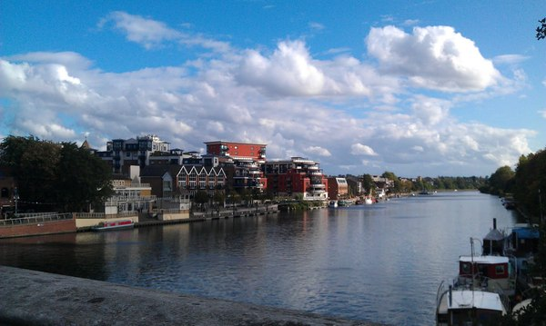
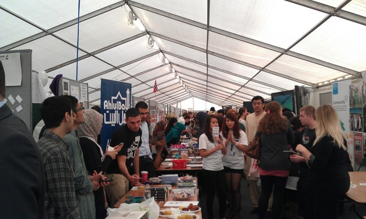
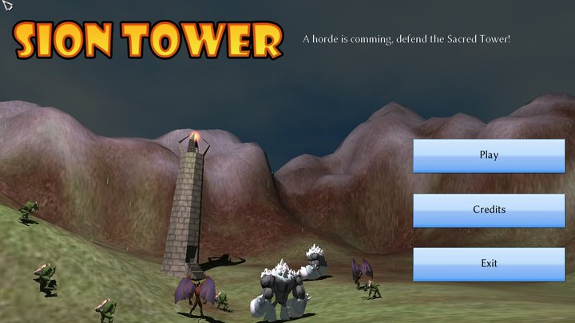
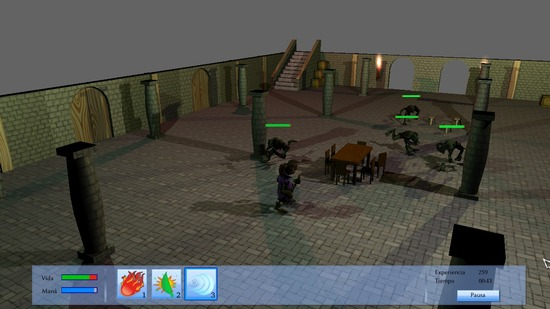

It’s been a while since I wrote anything on the blog but hey, this time I have an excuse. I"m in Kingston Upon Thames (London) to study computing science and games development for a whole year with an Erasmus exchange scholarship. I arrived on September the 13th and since then, it’s been a nonstop of activities: tourism, paperwork, parties, meeting people, housework, etc. Finally I can sit for a while to write this.
Kingston Upon Thames is a little city in southwest London, the advantage of its reduced extension is that you can walk almost everywhere. However is also really close to Central London, if you catch a train (there’s one each 15 minutes) you"ll be in Waterloo station in about 20 minutes. So far I think it’s a great combination. I live in a hall of residence, specifically in a flat shared with other 5 international students, such a great place to meet new people and party! My hall is 5 minutes walking from the center, which has a nice main street full of shops. Of course, I couldn’t forget the pubs and clubs. Although they close extremely early, we always have a great time hanging out there. It’s real fun when we gather to watch a football (soccer if you"re American) game while drinking a pint!

Computing science is taught at the main campus which is called Penrhyn Road, 15 minutes away if you walk. I was amazed with the huge amount of money they should invest to have proper facilities: a huge library, great fully equipped labs and comfortable classrooms. It’s unbelievable how active the people is around here, there are students societies for almost everything you can imagine: DJs, skydiving, fencing, cake eating, wine tasting, gaming, market investment… And the list goes on!

I’ve chosen 4 modules in computing science and 4 in games development, so it’s going to be some kind of mixture. I"m very excited because the year looks really promising! I"ll try to learn as much as possible not only in games development but in other skills such as English, speaking in public, teamwork, etc.
Acabo de subir a la forja el paquete con la versión 1.0 de Sion Tower tras la demo técnica de hace algunos meses. Esta será la versión que presente la próxima semana ante el tribunal de Proyecto fin de Carrera, ¡deseadme suerte! Entrad en el artículo para los enlaces de descarga.

Características
Si has seguido el blog de desarrollo habrás ido enterándote de las novedades de forma progresiva, en cualquier caso, listo las características más importantes del juego:
4 niveles completos, 3 tipos de enemigos y 3 hechizos diferentes.
Creación de nuevos niveles con Blender (se incluye un manual al respecto).
Sistema de IA para enemigos y búsqueda de caminos.
Internacionalización: inglés y español.
Banda sonora original compuesta por 8 piezas.
Efectos de sonido exclusivos.
Control del personaje mejorado y un nuevo sistema de cámaras.
Posibilidad de guardar partida, niveles desbloqueables y experiencia.
Interfaz completa e intuitiva. * Detección de colisiones en tiempo real.
¡Descúbrelas tú mismo!
Agradecimientos
Han sido unos meses de intenso trabajo pero de enormes recompensas. Sion Tower es el proyecto software más grande al que me había enfrentado y teniendo en cuenta que carecía de experiencia previa en el terreno de las 3D, ha sido todo un reto. Afortunadamente no he estado solo, me han asesorado mis directores de proyecto Manuel Palomo Duarte y Francisco Palomo Lozano.
¡No me puedo olvidar de mi equipo! Muchísimas gracias a Antonio Jiménez Rodríguez (arte 3D), Antonio Caro Oca y Daniel Pellicer García (BSO), Francisco Martín Márquez (efectos de sonido) y Daniel Belohlavek (iconos 2D). Han realizado un trabajo excepcional. Ah, ¡como no! Muchas gracias también a toda la comunidad que ha seguido el proyecto, aún queda camino por recorrer.

Descarga
El código fuente de Sion Tower está sujeto a una licencia GPL v3 mientras que los recursos multimedia (modelos, texturas, música, scripts y efectos) están liberados bajo Creative Commons 3.0 by-nc-sa.
Después de un mes de trabajo intenso y dolores provocados por teclear, he finalizado la memoria de Proyecto fin de Carrera de IberOgre y Sion Tower. Es una de las culpables de la escasez de actividad pero en ella podréis encontrar recopilada y ampliada la documentación que he ido publicando en este blog.
Se explica como se han diseñado e implementado las características más importantes de Sion Tower y cómo se ha ideado la estructura de IberOgre. No es una lectura de placer pero quizás a alguien le resulte de utilidad ya sea porque necesita una memoria de referencia o porque quiere conocer más del proyecto.
¡Paciencia porque dentro de poco llegará Sion Tower v1.0!
La documentación del código de Sion Tower 1.0 ha sido generada de forma automática con Doxygen, una estupenda herramienta libre para realizar esta tarea. El resultado es una sencilla página web que contiene información sobre todas las clases, métodos y atributos del sistema. Espero que sea útil a aquel que desee comprender cómo funciona el juego de forma interna.
Poco a poco voy preparando el lanzamiento formal de la versión 1.0 del videojuego de acción y estrategia Sion Tower. Espero poder publicar la versión en una semana aproximadamente.
En este nuevo vídeo podéis ver por fin el nuevo sistema de cámara de Sion Tower, mucho más cómodo que el anterior. Desplazando el ratón mientras se mantiene pulsado el botón derecho es posible hacer girar la cámara, con la rueda podemos acercarla o alejarla y, si nos movemos hará un seguimiento del personaje. También podéis ver un avance del segundo nivel del juego.